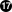

Очень важным и первостепенным шагом при действии как можно раньше после раскрытия уязвимости является уведомление сообщества пользователей порта об опасности. Такие уведомления служат двум целям. Во-первых, в случае действительно серьезной угрозы, будет посоветовано применить мгновенное воздействие. Например, остановить затрагиваемый сетевой сервис или даже удалить порт целиком, пока уязвимость не будет устранена. Во-вторых, масса пользователей имеет тенденцию обновлять установленные пакеты только от случая к случаю. Из уведомления они узнают, что должны обновить пакет без промедления сразу же после появления исправленной версии.
Учитывая огромное число портов в дереве, невозможно по каждому случаю выпускать бюллетень безопасности без создания флуда и потери внимания сообщества к моменту появления действительно серьезных причин. Поэтому уязвимости безопасности, обнаруженные в портах, записываются в базу данных FreeBSD VuXML. Члены Команды Офицеров Безопасности также отслеживают её на предмет появления вопросов, требующих их вмешательства.
Если вы обладаете правами коммиттера, вы можете сам обновить базу данных VuXML. Так вы поможете Команде Офицеров Безопасности и своевременно пошлете ценную информацию сообществу. Тем не менее, если вы не являетесь коммиттером или верите, что нашли исключительно серьезную уязвимость, то не задумываясь свяжитесь с Командой Офицеров Безопасности напрямую как это описано на странице информационной безопасности FreeBSD.
База данных VuXML является документом
XML. Его исходный файл
vuln.xml содержится прямо внутри порта
security/vuxml.
Следовательно, полное имя пути к файлу будет
PORTSDIR/security/vuxml/vuln.xml.
Каждый раз, при обнаружении вами в порте уязвимости
безопасности добавьте об этом запись в этот файл. Пока вы не
знакомы с VuXML, лучшее, что вы можете сделать, это найти
существующую запись, подпадающую под ваш случай, затем
скопировать ее и использовать в качестве шаблона.
В совокупности XML является очень сложным форматом, и его описание выходит далеко за рамки этой книги. Тем не менее, для достижения основного понимания структуры записи VuXML вам понадобится всего лишь понять теги. Имена тегов XML обрамляются в угловые скобки. Каждый открывающий <tag> должен иметь совпадающий закрывающий </tag>. Теги могут быть вложенными. При вложенности внутренние теги должны быть закрыты до закрытия внешних. Существует иерархия тегов, т.е. более сложные правила вкладывания тегов. Это похоже на HTML. Основное отличие в расширяемости XML, т.е. в определении собственных тегов. Из-за своей характерной структуры XML придает форму разрозненным данным. В частности, XML подходит для разметки описаний уязвимостей безопасности.
Теперь рассмотрим настоящую запись VuXML:
<vuln vid="f4bc80f4-da62-11d8-90ea-0004ac98a7b9"><topic>Several vulnerabilities found in Foo</topic>
<affects> <package> <name>foo</name>
<name>foo-devel</name> <name>ja-foo</name> <range><ge>1.6</ge><lt>1.9</lt></range>
<range><ge>2.*</ge><lt>2.4_1</lt></range> <range><eq>3.0b1</eq></range> </package> <package> <name>openfoo</name>
<range><lt>1.10_7</lt></range>
<range><ge>1.2,1</ge><lt>1.3_1,1</lt></range> </package> </affects> <description> <body xmlns="http://www.w3.org/1999/xhtml"> <p>J. Random Hacker reports:</p>
<blockquote cite="http://j.r.hacker.com/advisories/1"> <p>Several issues in the Foo software may be exploited via carefully crafted QUUX requests. These requests will permit the injection of Bar code, mumble theft, and the readability of the Foo administrator account.</p> </blockquote> </body> </description> <references>
<freebsdsa>SA-10:75.foo</freebsdsa>
<freebsdpr>ports/987654</freebsdpr>
<cvename>CAN-2010-0201</cvename>
<cvename>CAN-2010-0466</cvename> <bid>96298</bid>
<certsa>CA-2010-99</certsa>
<certvu>740169</certvu>
<uscertsa>SA10-99A</uscertsa>
<uscertta>SA10-99A</uscertta>
<mlist msgid="201075606@hacker.com">http://marc.theaimsgroup.com/?l=bugtraq&m=203886607825605</mlist>  <url>http://j.r.hacker.com/advisories/1</url>
</references> <dates> <discovery>2010-05-25</discovery>
<entry>2010-07-13</entry> <modified>2010-09-17</modified>
</dates> </vuln>
Имена тегов должны быть самодокументируемыми, чтобы мы сфокусировались только на полях, нужных нам для заполнения:
| Это тег верхнего уровня записи VuXML. У него есть
обязательный атрибут |
| Однострочное описание найденной проблемы. |
| Здесь перечислены имена затронутых пакетов. Может быть дано несколько имен, поскольку некоторые пакеты могут быть основаны на одном главном порте или программном продукте. Сюда можно включить стабильную ветвь и ветвь разработки, локализованные версии и подчиненные порты, зависящие от различного выбора важных вариантов конфигурации, указанных на этапе построения. Важно:Поиск всех подобных пакетов при написании записи
VuXML входит в зону вашей ответственности. Имейте в
виду, что
|
| Здесь указаны затронутые версии пакета(-ов) как один
или более диапазонов с использованием комбинации
элементов В спецификации диапазонов Пример выше указывает, что к затронутым относятся
версии с |
| Некоторые связанные группы пакетов (в конечном счете,
порты) могут быть указаны в разделе
|
| Диапазоны версий должны учитывать
|
| Сводная информация о проблеме. В этом поле
используется XHTML. По крайней мере, должны быть
обрамляющие |
| Этот раздел содержит ссылки на имеющие отношение документы. Приветствуется как можно большее количество ссылок. |
| |
| |
| Идентификатор MITRE CVE. |
| Это SecurityFocus Bug ID. |
| Бюллетень безопасности US-CERT. |
| Примечание к уязвимости US-CERT. |
| Уведомление системы Cyber Security Alert US-CERT. |
| Уведомление системы Technical Cyber Security Alert US-CERT. |
URL к архивному сообщению в списке рассылки. Атрибут
| |
| Основной URL. Должен быть использован в случае, если не подходит ни одна из категорий источника. |
| Дата последнего изменения любой информации данной
записи ( |
Предположим, что вы только что написали или заполнили
запись об уязвимости в пакете clamav,
которая была исправлена в версии
0.65_7.
Прежде всего, вам нужно установить последние версии портов ports-mgmt/portaudit, ports-mgmt/portaudit-db и security/vuxml.
Примечание:
Для запуска packaudit вы должны
обладать правами на запись в
DATABASEDIR; как правило, это
/var/db/portaudit.
Для использования другого каталога присвойте переменной
окружения DATABASEDIR другой
путь.
Если вы работаете в каталоге, отличном от
${PORTSDIR}/security/vuxml, присвойте
переменной окружения VUXMLDIR путь к
каталогу, в котором находится
vuln.xml.
Во-первых, проверьте, нет ли уже записи об этой
уязвимости. Если такая запись есть, она совпадёт с
предыдущей версией пакета 0.65_6:
%packaudit%portaudit clamav-0.65_6
Если ничего не найдено, значит вы получили зеленый свет для добавления новой записи для этой уязвимости.
%cd ${PORTSDIR}/security/vuxml%make newentry
Когда вы закончите, проверьте синтаксис и форматирование.
%make validate
Примечание:
Вам понадобится установить по крайней мере один из следующих пакетов: textproc/libxml2, textproc/jade.
Теперь выполните перепостроение базы данных
portaudit из файла VuXML:
%packaudit
Чтобы убедиться, что раздел
<affected> в вашей записи совпадает
с правильными пакетами, выполните следующую команду:
%portaudit -f /usr/ports/INDEX -r uuid
Примечание:
Для лучшего понимания синтаксиса этой команды обращайтесь к portaudit(1).
Убедитесь, что ваша запись не производит ложных совпадений в выводе.
Теперь проверьте, совпадает ли ваша запись с нужными версиями пакета:
%portaudit clamav-0.65_6 clamav-0.65_7Affected package: clamav-0.65_6 (matched by clamav<0.65_7) Type of problem: clamav remote denial-of-service. Reference: <http://www.freebsd.org/ports/portaudit/74a9541d-5d6c-11d8-80e3-0020ed76ef5a.html> 1 problem(s) found.
Первая версия должна совпасть, а последняя нет.
В заключение проверьте, что веб-страница, сформированная из базы данных VuXML, выглядит как положено:
%mkdir -p ~/public_html/portaudit%packaudit%lynx ~/public_html/portaudit/74a9541d-5d6c-11d8-80e3-0020ed76ef5a.html